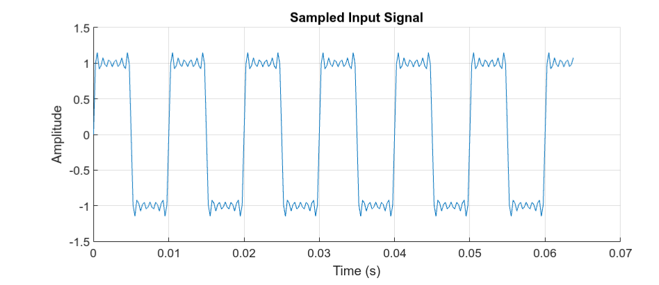
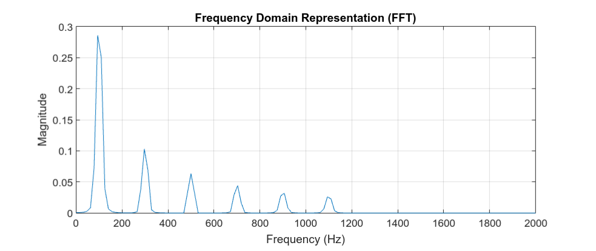
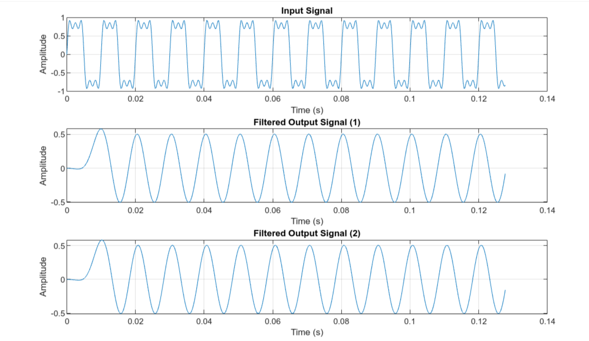
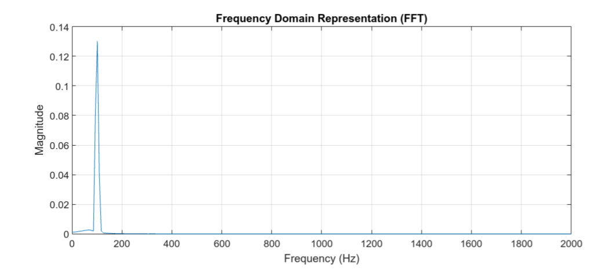
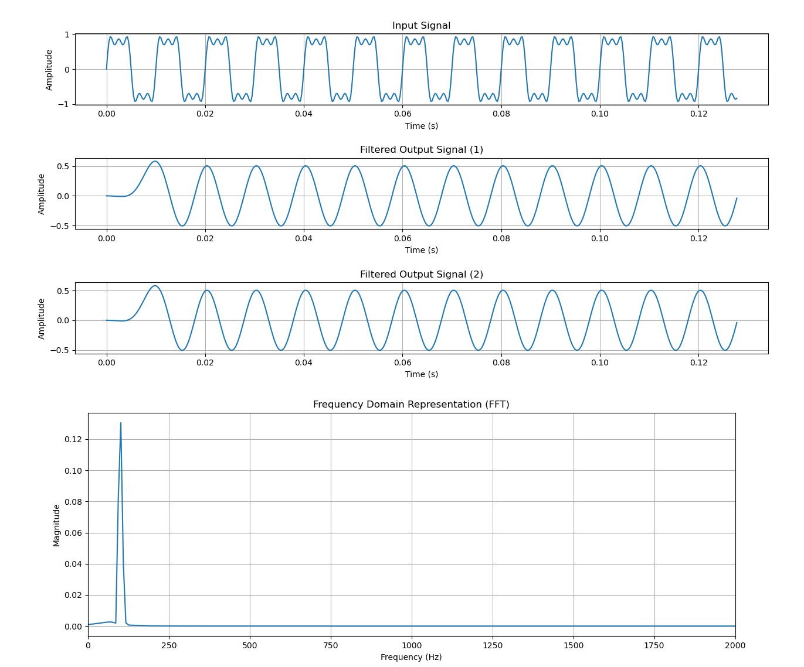
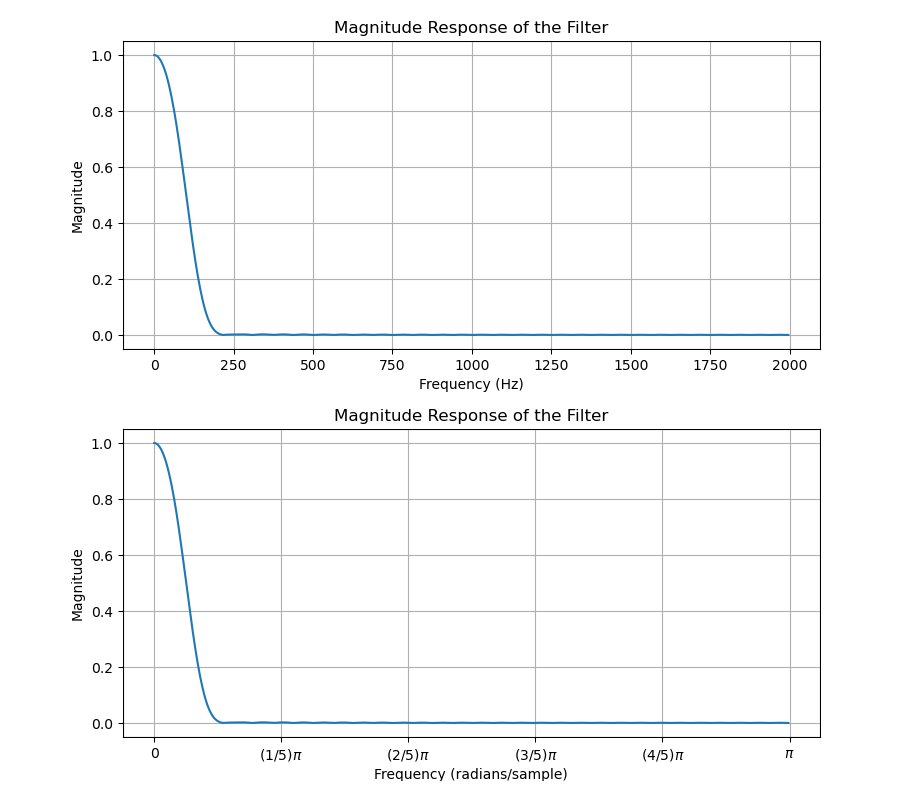

ตัวอย่างการเขียนโค้ด MATLAB และ Python สำหรับตัวกรองความถี่แบบ FIR Filtering#
บทความนี้กล่าวถึง ตัวอย่างการเขียนโค้ดในภาษา MATLAB และ Python ที่ใช้ในการประมวลผลสัญญาณแบบดิจิทัลและกรองความถี่ โดยใช้ตัวกรองแบบ Low-Pass FIR Filter
Keywords: Window-based FIR Filtering, Convolution Sum, MATLAB, Python
▷ Digital Filtering#
การกรองสัญญาณแบบดิจิทัล (Digital Filtering) เป็นเทคนิคการประมวลผลสัญญาณดิจิทัล (Digital Signal Processing: DSP) เพื่อใช้ตัดหรือแยกองค์ประกอบของสัญญาณตามช่วงความถี่ ซึ่งแบ่งเป็นสองประเภทตามหลักการทำงานของตัวกรอง คือ
- FIR (Finite Impulse Response) Filter
- IIR (Infinite Impulse Response) Filter
ถ้าให้ เป็นอินพุต และ เป็นเอาต์พุตของระบบประมวลผลสัญญาณดิจิทัล ความสัมพันธ์ระหว่างอินพุตและเอาต์พุตของตัวกรองสัญญาณ สามารถเขียนให้อยู่ในรูปแบบสมการที่เรียกว่า "สมการผลต่าง" (Difference Equation) ดังนี้
ในบทความนี้จะกล่าวถึง ตัวกรองในประเภท FIR เท่านั้น ตัวกรองสัญญาณดิจิทัลแบบ FIR มีผลตอบสนองอิมพัลส์ (Impulse Response) ที่มีความยาวหรือจำนวนสัมประสิทธิ์จำกัด และสามารถคำนวณได้ง่าย
▷ Convolution Sum#
กำหนดให้ คือ "อิมพัลส์หนึ่งหน่วย" ซึ่งมีคุณสมบัติดังนี้ โดยที่ เป็นเลขจำนวนเต็ม
ถ้าให้ เป็นตัวดำเนินการทางคณิตศาสตร์ของระบบที่มีคุณสมบัติแบบ LTI (Linear Time-Invariance) หรือ มีความเป็นเชิงเส้นและไม่แปรเปลี่ยนตามการเลื่อนเวลา เช่น ระบบดิจิทัลที่เป็นตัวกรองความถี่ และใช้สำหรับการแสดงความสัมพันธ์ระหว่างสัญญาณอินพุต กับสัญญาณเอาต์พุต ของระบบ ดังนี้ เมื่อป้อนอินพุต ก็จะได้เอาต์พุต ซึ่งโดยนิยาม เรียกว่า ผลตอบสนองอิมพัลส์หนึ่งหน่วย
สัญญาณ สามารถเขียนให้อยู่ในรูปของผลรวมอนันต์ดังนี้
ถ้ากำหนดให้ คือ ผลตอบสนองอิมพัลส์หนึ่งหน่วย ดังนั้นจึงได้ผลลัพธ์หรือเอาต์พุตของระบบ คือ ซึ่งเป็นไปตามความสัมพันธ์ดังนี้
และการคำนวณในลักษณะนี้ว่า ผลรวมคอนโวลูชันระหว่าง x[n] กับ h[n] โดยที่สัญลักษณ์
* หมายถึง ผลรวมคอนโวลูชัน (Convolution Sum)
ผลรวมคอนโวลูชัน มีคุณสมบัติการสลับที่ (Commutative Property) ดังนี้
ถ้ากำหนดให้ มีความยาวจำกัดเท่ากับ และให้ ถ้า หรือ ดังนั้น
รูปแบบการคำนวณในลักษณะนี้ ตรงกับการทำงานของตัวกรองดิจิทัลแบบ FIR และคุณสมบัติของตัวกรอง จะขึ้นอยู่กับการกำหนดค่าสัมประสิทธิ์ของตัวกรอง (Filter Coefficients):
▷ ตัวอย่างการเขียนโค้ด MATLAB#
ถัดเป็นตัวอย่างการเขียนโค้ด MATLAB โดยแบ่งเป็นขั้นตอนดังนี้
- กำหนดพารามิเตอร์สำหรับการวิเคราะห์สัญญาณอินพุตที่มีคาบเวลา
โดยยกตัวอย่าง สัญญาณอินพุตที่ได้จากผลรวมของสัญญาณรูปคลื่นไซน์ที่มีความถี่เป็นจำนวนเท่าของ
freqเช่น 100Hz (ความถี่มูลฐาน) - ทำขั้นตอนการชักตัวอย่างสัญญาณอินพุตด้วยความถี่
Fsเช่น 4000Hz และจำนวนของข้อมูลที่ได้จากการชักตัวอย่างคือN_samplesเช่น 256 - สร้างอาร์เรย์ค่าคงที่ตามรูปแบบของฟังก์ชัน Windowing Function (เช่น เลือกตามรูปแบบของ Hamming หรือ Hann)
- ทำขั้นตอน Signal Windowing สำหรับข้อมูลอินพุต
- แสดงรูปกราฟของข้อมูลอินพุตและผลลัพธ์จากการทำขั้นตอน Signal Windowing จากขั้นตอนที่ 4
- ทำการแปลง FFT (Fast-Fourier Transform) สำหรับข้อมูลอินพุตที่ได้จากขั้นตอนที่ 5 แล้วแสดงกราฟสเปกตรัมขนาดของสัญญาณ (Magnitude Spectrum)
%%%%%%%%%%%%%%%%%%%%%%%%%%%%%%%%%%%%%%%%%%%%%%%%%%%%%%%%%%%%%
% clear variables, clear the command window, clear figures
clearvars; clc; clf;
% Step 1) Define some parameters.
freq = 100; % The fundamental frequency of the sine wave (in Hz)
Fs = 4000; % The sampling rate (in Hz)
N_samples = 256; % Number of samples
ts = 0:1/Fs:(N_samples-1)/Fs; % Define an array of time steps
% Step 2) Generate the input signal.
% of different harmonic frequencies.
x_input = zeros(1,N_samples);
omega = 2*pi*freq;
K=11;
for k=1:2:K
x_input = x_input + 4/(pi*k) * sin((k*omega)*ts);
end
% Step 3) Define a windowing function.
% window = ones(N_samples,1); % Rectangular window
% window = hamming(N_samples); % Hamming window
window = hann(N_samples); % Hann window
% Step 4) Apply the windowing function to the input signal.
x_input_windowed = x_input .* window';
% Step 5) Plot the sampled data.
figure('Position',[100,100,1000,400]);
hold on;
plot( ts, x_input );
title( 'Input signal');
hold off;
xlabel('Time (s)'), ylabel('Amplitude');
title('Sampled Input Signal'), grid on;
%%%%%%%%%%%%%%%%%%%%%%%%%%%%%%%%%%%%%%%%%%%%%%%%%%%%%%%%%%%%%
% Step 6) Create FFT-based Frequency Spectrum.
% Create frequency steps for the frequency axis.
frequencies = (0:N_samples-1) * (Fs/N_samples);
% Compute the FFT.
fft_result = fft(x_input_windowed);
% Normalize by number of samples.
magnitude_spectrum = abs(fft_result)/N_samples;
% Plot the FFT result.
figure('Position',[100,100,1000,400]);
plot(frequencies, magnitude_spectrum);
title('Frequency Domain Representation (FFT)');
xlabel('Frequency (Hz)'), ylabel('Magnitude');
xlim([0, Fs/2]), grid on;

รูป: ตัวอย่างสัญญาณอินพุตเพื่อนำไปใช้ในการแปลงสัญญาณด้วย FFT

รูป: สเปกตรัมความถี่ซึ่งได้จากการแปลงสัญญาณด้วย FFT ที่แยกให้เห็นองค์ประกอบของสัญญาณอินพุตตามความถี่
ถัดไปเป็นการสร้างสัญญาณอินพุตอีกตัวอย่างหนึ่ง และมีการชักตัวอย่าง โดยให้สัญญาณอินพุตได้จากผลรวมของสัญญาณไซน์ที่มีความถี่ เช่น {100Hz, 300Hz และ 500Hz} และมีแอมพลิจูดแตกต่างกัน (ลดลงตามลำดับความถี่)
เมื่อสร้างสัญญาณอินพุตแล้ว ถัดไปจึงสร้างตัวกรองแบบ Low-Pass FIR Filter
โดยใช้คำสั่ง fir1() ของ MATLAB
โดยจะต้องมีการกำหนดจำนวนสัมประสิทธิ์ของตัวกรอง
และความถี่ Cutoff Frequency (กำหนดค่าเป็น
Normalized Cutoff Frequency เทียบกับความถี่ของการชักตัวอย่าง)
ข้อสังเกต: MATLAB มีเครื่องมือในการช่วยออกแบบตัวกรองความถี่ (MATLAB Filter Design) ผู้ใช้สามารถกำหนดคุณสมบัติต่าง ๆ ของตัวกรองที่ต้องการ เช่น ประเภทของตัวกรอง ผลตอบสนองทางความถี่ ความกว้างของช่วงเปลี่ยนผ่านความถี่ และจำนวนของสัมประสิทธิ์ที่ต้องการใช้ เป็นต้น
สำหรับตัวอย่างนี้ ได้ตั้งค่าให้เป็นสองเท่าของความถี่ 100Hz ของสัญญาณอินพุต ดังนั้นถ้าใช้ตัวกรองนี้กับสัญญาณอินพุต องค์ประกอบเชิงความถี่ในสัญญาณอินพุตที่สูงกว่า 200Hz จะถูกกรองทิ้งไป
การหาเอาต์พุตที่ได้จากการนำอินพุตที่ผ่านตัวกรอง มีตัวอย่าง 2 วิธีการ วิธีแรกคือ
ใช้คำสั่ง filter() ของ MATLAB และอีกวิธีหนึ่งคือ
การคำนวณผลรวมคอนโวลูชันระหว่างสัญญาณอินพุตกับผลตอบสนองอิมพัลส์ของตัวกรอง
สัญญาณเอาต์พุตที่ได้จากการกรองให้ความถี่ต่ำผ่าน จะถูกนำไปแสดงเป็นรูปกราฟคลื่นสัญญาณ รวมถึงการแสดงสเปกตรัมขนาดของสัญญาณเอาต์พุตด้วย เพื่อง่ายต่อการตรวจสอบ นอกจากนั้นแล้ว ยังมีการคำนวณเพื่อหาค่าความถี่ในสเปกตรัม ในตำแหน่งที่มีขนาดของสัญญาณเอาต์พุตมากที่สุด
% clear variables, clear the command window, clear figures
clearvars; clc; clf; close all;
%%%%%%%%%%%%%%%%%%%%%%%%%%%%%%%%%%%%%%%%%%%%%%%%%%%%%%%%%%%%%
% Step 1)
% Define the parameter and generate the input signal.
freq = 100; % The fundamental frequency of the input (in Hz)
Fs = 4000; % The Sampling rate (in Hz)
N_samples = 512; % Number of samples
% Define an array of time steps
ts = 0:1/Fs:(N_samples-1)/Fs;
% Generate the input waveform consisting of 3 sine-wave signals.
% of different frequencies.
omega = 2*pi*freq;
x_input = sin( omega * ts ) ...
+ (1/3)*sin( 3*omega*ts ) ...
+ (1/5)*sin( 5*omega*ts );
%%%%%%%%%%%%%%%%%%%%%%%%%%%%%%%%%%%%%%%%%%%%%%%%%%%%%%%%%%%%%
% Step 2)
% Use MATLAB Filter Designer to create a low-pass FIR filter.
% with a cutoff frequency (normalized frequency).
N_ORDERS = 64; % Set the FIR Filter order.
Wn = (2*freq/Fs); % Set the normalized cutoff frequency.
% Generate filter coefficients for a low-pass FIR filter.
b = fir1( N_ORDERS, Wn, 'low' );
%%%%%%%%%%%%%%%%%%%%%%%%%%%%%%%%%%%%%%%%%%%%%%%%%%%%%%%%%%%%%
% Step 3)
% Apply the FIR filter to the windowded input signal.
y_output1 = filter(b, 1, x_input);
% The b array represents the numerator coefficients and
% 1 represents the denominator coefficients of the filter's
% transfer function.
% For FIR filters, the denominator coefficients are always 1.
M = length(b);
x_input_padded = [zeros(1,M),x_input];
N = length(x_input_padded);
y_output2 = zeros(1,N);
% Apply the filter using convolution sum.
for i=M:N
y_output2(i) = sum(b .* x_input_padded(i:-1:i-M+1));
end
y_output2 = y_output2(M:N-1);
y_output = y_output1;
%%%%%%%%%%%%%%%%%%%%%%%%%%%%%%%%%%%%%%%%%%%%%%%%%%%%%%%%%%%%%
% Step 4) Plot the input and filtered signals.
figure('Position',[100,100,1000,600]);
subplot(3, 1, 1);
plot(ts, x_input);
title('Input Signal');
xlabel('Time (s)'), ylabel('Amplitude'), grid on;
subplot(3, 1, 2);
plot(ts, y_output1);
title('Filtered Output Signal (1)');
xlabel('Time (s)'), ylabel('Amplitude'), grid on;
subplot(3, 1, 3);
plot(ts, y_output2);
title('Filtered Output Signal (2)');
xlabel('Time (s)'), ylabel('Amplitude'), grid on;
%%%%%%%%%%%%%%%%%%%%%%%%%%%%%%%%%%%%%%%%%%%%%%%%%%%%%%%%%%%%%
% Step 5) Plot the FFT result.
% Create frequency steps for the frequency axis
frequencies = (0:N_samples-1) * (Fs/N_samples);
% Compute the FFT
fft_result = fft( y_output .* hamming(N_samples)' );
% Normalize by number of samples
magnitude_spectrum = abs(fft_result)/N_samples;
figure('Position',[100,100,1000,400]);
plot(frequencies, magnitude_spectrum);
title('Frequency Domain Representation (FFT)');
xlabel('Frequency (Hz)'),ylabel('Magnitude');
xlim([0, Fs/2]), grid on;
%%%%%%%%%%%%%%%%%%%%%%%%%%%%%%%%%%%%%%%%%%%%%%%%%%%%%%%%%%%%%%
% Step 6) Find the dominant frequency.
[~, index] = max(abs(fft_result));
dominant_freq = frequencies(index);
fprintf('Dominant Frequency: %.2f Hz\n', dominant_freq);
% output: 101.56Hz
% Count the number of zero-crossings.
zero_crossings = length(find(diff(sign(y_output))));
freq = (zero_crossings/2)/(N_samples/Fs);
fprintf('Estimated Frequency: %.2f Hz\n', freq);
% output: 99.61 Hz

รูป: สัญญาณอินพุตและเอาต์พุตที่ได้จากการผ่านตัวกรอง

รูป: สเปกตรัมที่ได้จากการแปลง FFT ของสัญญาณเอาต์พุต
จากรูปกราฟ จะเห็นว่า องค์ประกอบของสัญญาณที่มีความถี่สูงกว่า 200Hz ถูกกรองทิ้งไป เหลือแต่องค์ประกอบของสัญญาณที่มีความถี่ 100Hz เท่านั้น
▷ ตัวอย่างการเขียนโค้ด Python#
ถัดไปเป็นตัวอย่างการเขียนโค้ด Python เพื่อเปรียบเทียบกับโค้ด MATLAB ซึ่งเหมาะสำหรับกรณีที่ผู้ใช้ไม่มีลิขสิทธิ์การใช้งานซอฟต์แวร์หรือไม่สะดวกใช้ MATLAB
import numpy as np
from scipy.signal import firwin, lfilter
import matplotlib.pyplot as plt
# Step 1: Generate the input signal
freq = 100 # The fundamental frequency of the input (in Hz)
Fs = 4000 # The Sampling rate (in Hz)
N_samples = 512 # Number of samples
ts = np.arange(0, N_samples) / Fs
omega = 2 * np.pi * freq
x_input = (np.sin(omega*ts)
+ (1/3)*np.sin(3*omega*ts)
+ (1/5)*np.sin(5*omega*ts))
# Step 2: Create a low-pass FIR filter
N_ORDERS = 64 # Set the FIR Filter order.
Wn = 2*freq/Fs # Set the normalized cutoff frequency.
b = firwin(N_ORDERS, Wn, window='hamming')
# Step 3: Apply the FIR filter to the input signal.
# Method 1) Use the scipy.signal.lfilter() function for filtering.
y_output1 = lfilter(b, 1, x_input)
# b: The numerator coefficients a
# a: The denominator coefficients of the filter's transfer function.
# For FIR filters, a=1 (no feedback).
M = len(b)
x_input_padded = np.concatenate((np.zeros(M), x_input))
N = len(x_input_padded)
# Method 2) Compute the output using convolution sum.
y_output2 = np.zeros(N)
for i in range(M,N):
y_output2[i] = np.sum(b * x_input_padded[i:i-M:-1])
# Remove the first M values from the output.
y_output2 = y_output2[M:N]
y_output = y_output1 # Select the output
# Step 4: Plot the input and filtered signals
plt.figure(figsize=(10, 6))
plt.subplot(3, 1, 1)
plt.plot(ts, x_input)
plt.title('Input Signal')
plt.xlabel('Time (s)')
plt.ylabel('Amplitude')
plt.grid(True)
plt.subplot(3, 1, 2)
plt.plot(ts, y_output1)
plt.title('Filtered Output Signal (1)')
plt.xlabel('Time (s)')
plt.ylabel('Amplitude')
plt.grid(True)
plt.subplot(3, 1, 3)
plt.plot(ts, y_output2)
plt.title('Filtered Output Signal (2)')
plt.xlabel('Time (s)')
plt.ylabel('Amplitude')
plt.grid(True)
plt.subplots_adjust(left=0.1, right=0.9, top=0.9,
bottom=0.1, wspace=0.2, hspace=0.75)
plt.show()
# Step 5: Plot the FFT result
frequencies = np.arange(N_samples)*(Fs/N_samples)
fft_result = np.fft.fft(y_output * np.hamming(N_samples))
magnitude_spectrum = np.abs(fft_result)/N_samples
plt.figure(figsize=(10, 4))
plt.plot(frequencies, magnitude_spectrum)
plt.title('Frequency Domain Representation (FFT)')
plt.xlabel('Frequency (Hz)')
plt.ylabel('Magnitude')
plt.xlim(0, Fs / 2)
plt.grid(True)
plt.show()
# Step 6: Find the dominant frequency
index = np.argmax(np.abs(fft_result))
dominant_freq = frequencies[index]
print(f'Dominant Frequency: {dominant_freq:.2f} Hz')
zero_crossings = len(np.where(np.diff(np.sign(y_output)))[0])
freq = (zero_crossings/2)/(N_samples/Fs)
print(f'Estimated Frequency: {freq:.2f} Hz')

รูป: ตัวอย่างการแสดงรูปกราฟด้วย Python
อีกตัวอย่างหนึ่งเป็นโค้ด Python เพื่อใช้ในการแสดงผลตอบสนองเชิงความถี่ของตัวกรอง (Filter's Frequency Response)
from scipy.signal import lfilter, freqz
# Note: use the filter coefficients (a,b) from the previous code.
# Compute the frequency response of the filter using freqz
w, h = freqz(b, a=1)
# w: An array of angular frequencies ranging from 0 to pi (radians/sample).
# h: An array of complex values representing the freq. response of the filter.
# Extract the magnitude of the frequency response.
magnitude = np.abs(h)
# Plot the magnitude response.
real_frequencies = (w/(2*np.pi))*Fs
plt.figure(figsize=(9,4))
plt.plot(real_frequencies, magnitude)
plt.title('Magnitude Response of the Filter')
plt.xlabel('Frequency (Hz)')
plt.ylabel('Magnitude')
plt.grid(True)
plt.show()
# Calculate custom x-axis values as integer multiples of pi/N_STEPS.
N_STEPS = 5
x_steps = np.arange(0,N_STEPS+1)
custom_ticks = np.pi*x_steps/N_STEPS
custom_labels = [f'({x}/{N_STEPS})$\pi$' for x in x_steps[:-1]]
custom_labels[0] = '0'
custom_labels.append( '$\pi$' )
# Plot the magnitude response with custom x-axis labels.
plt.figure(figsize=(9,4))
plt.plot(w, magnitude)
plt.title('Magnitude Response of the Filter')
plt.xlabel('Frequency (radians/sample)')
plt.ylabel('Magnitude')
plt.grid(True)
# Set the custom x-axis labels
plt.xticks(custom_ticks, custom_labels)
plt.show()

รูป: ตอบสนองเชิงความถี่ของตัวกรอง
▷ กล่าวสรุป#
บทความนี้ได้นำเสนอ หลักการทำงานของตัวกรองความถี่ ซึ่งใช้วิธีการประมวลผลข้อมูลแบบดิจิทัล (Digital Filters) และมีตัวอย่างโค้ดสำหรับ MATLAB และ Python เพื่อสาธิตการทำขั้นตอนการกรองสัญญาณดิจิทัล และเป็นตัวกรองแบบความถี่ต่ำผ่านได้
This work is licensed under a Creative Commons Attribution-ShareAlike 4.0 International License.
Created: 2023-10-17 | Last Updated: 2023-10-18